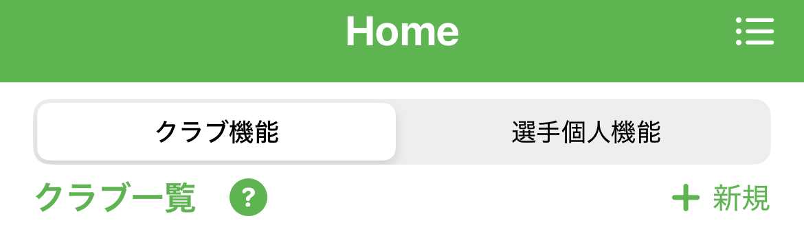
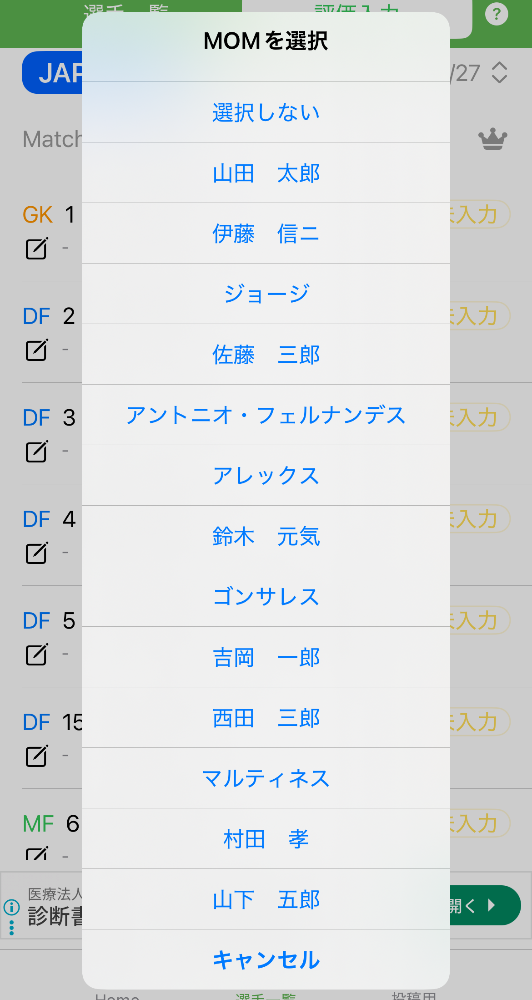

クラブサポーター向けの流れ
クラブ単位で選手を管理し、試合ごとに採点。クラブカラーで画像を生成してSNSで共有できます。
-
Step 1. ダウンロード
App Store からアプリをインストール。
-
Step 2. クラブ登録
ホーム → クラブ追加（「＋ 新規」ボタン）

背景色・文字色をクラブカラーに設定すると、画像生成の配色に反映されます。
色は後から変更可能です。文字色は可読性重視で調整をしてください。続いて、シーズンを追加します。（「＋ 新規」ボタン）


シーズン名を入力して、保存します。
-
Step 3. 選手登録
ホーム → クラブ名 → 選手設定（「⚙」ボタン）

続いて、選手を追加します。（「＋ 選手追加」ボタン）

シーズン単位で管理できます。
過去シーズンからの引き継ぎも可能で、更新が簡単です。
-
Step 4. 試合登録
ホーム → クラブ名 → 評価入力 → 試合追加（「＋」ボタン）。


試合名を入力してください。
試合名は後から変更可能です。 -
Step 5. 評価入力（★）
ホーム → クラブ名 → 評価入力
試合名が入力されていることを確認して各選手の「未入力」欄をタップして星評価を入力できます。
選手名をタップすると、各選手に対して試合の一言メモ(50文字まで)を残せます。
 短文でもOK。後で振り返りやすくなります。
短文でもOK。後で振り返りやすくなります。「👑」ボタンからMOM（マン・オブ・ザ・マッチ）も選出できます。
 -
その他機能 選手詳細（統計）
ホーム → クラブ名 → 選手一覧 → 選手詳細（各選手をタップ）
平均評価やMOM回数を自動集計します。
折れ線グラフで評価推移（直近5試合／全試合）を切替表示。
その他機能 画像生成（共有）
試合ごとの評価まとめ、選手一覧、選手詳細などを画像として保存。
クラブカラーを活かしたデザインでSNSシェアに最適です。縦長画像はInstagramで2〜3分割して投稿すると見やすく表示できます。